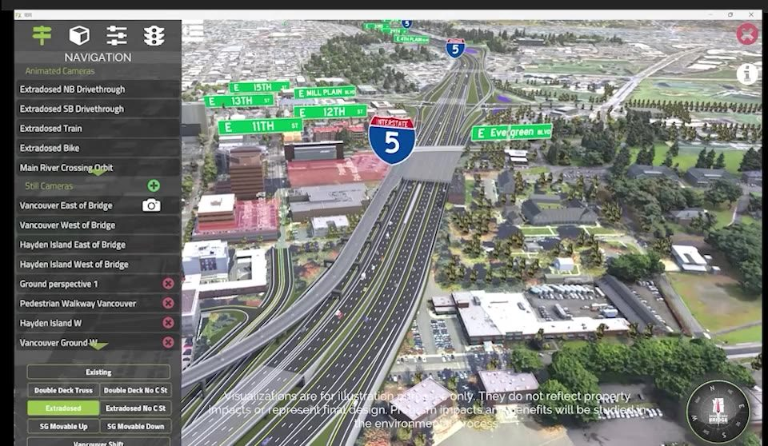
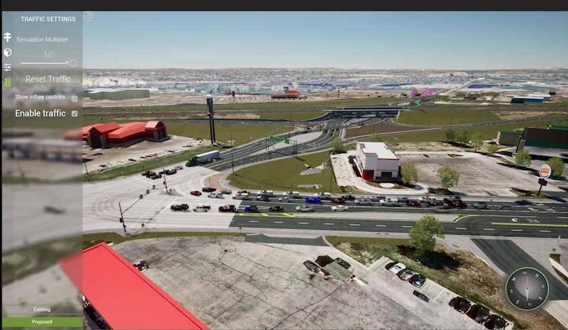
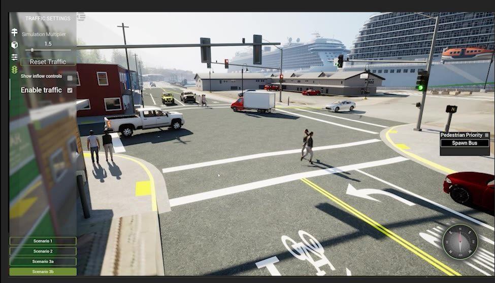
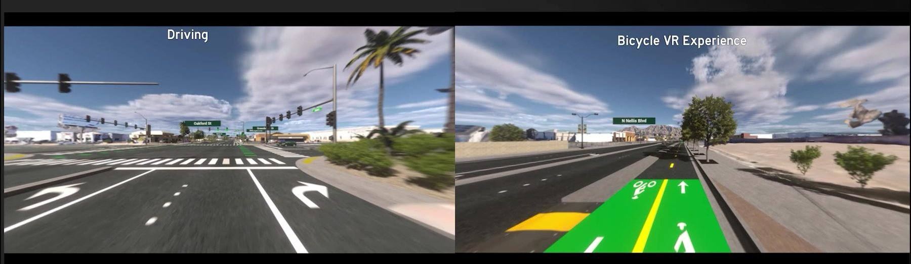

Open it in a public meeting and someone can ask what the project looks like from their driveway — and you show them, right then. Turn the traffic volumes up. Drop into a car, a bike or a pedestrian and travel through the interchange. Switch to existing conditions and back. Nothing is pre-rendered, so no question is off-script.
See it in motion
Forty-eight seconds from live applications: camera menus, traffic controls, existing-versus-proposed switching, ground-level and first-person views.
Inside the application




What’s in every twin
Free camera
Fly to any perspective at any moment — no pre-set path to stay on.
Existing / proposed switching
Toggle between conditions — and any other phase you need — from any view, at any time.
Smart traffic
Vehicles accelerate, decelerate, obey signals, merge and stop for pedestrians — or run on your Vissim or Aimsun data.
Pedestrian system
Custom 3D people that interact with signals, crosswalks and crossing-guard sequences.
Weather and time of day
Move the sun, add rain or fog, and show the corridor at the hour that matters.
Pathway overlays
Graphical arrows that highlight key movements and walk an audience through construction stages.
In-app rendering
Export stills up to 8K and video up to 4K of any view or movement, straight out of the application.
Multi-touch controls
Built for touch screens at open houses and lobby kiosks. Mouse and keyboard work too.
The traffic is not an animation
Nothing on the road is on rails. Every vehicle decides for itself, several times a second, using the same car-following and lane-changing models traffic-flow researchers publish on — so queues, gaps and merges emerge instead of being drawn.
One intersection, running live in the engine. Queues build and discharge, turning vehicles wait for their gaps, and every path you can see is a decision rather than a keyframe.
01Following
A driver’s target gap is not a fixed car length. It is about 1.5 seconds of headway at speed, two metres at a standstill, and it stretches further the faster the gap ahead is closing. That single rule is why a queue forms at the back of a platoon, ripples backwards and clears on its own. Nobody animated the shockwave.
02Wanting to change lanes
Each driver scores the lanes beside them — how badly do I need to be over there? An exit a couple of hundred metres out builds pressure steadily; a faster-moving lane is a mild pull. As the need climbs the driver escalates: take any gap, then slow to match a leader and wait, then lean on the neighbouring driver to open one.
03Being allowed to
Wanting it is not enough. Every change has to clear a safety check first: would the driver behind have to brake harder than a person actually would? If so the change simply doesn’t happen, however badly it was wanted — which is why the merges look like merges instead of vehicles sliding through each other.
04Merging when there’s no choice
On an on-ramp or a vanishing turn lane a driver can’t give up and stay put. They hold for a gap and get more assertive the longer they wait — but queue order holds, so nobody jumps the line, and a gap that someone just merged into is protected from being poached for the next twenty seconds.
Every driver also sees about 150 metres of road ahead, remembers the tight gap it just accepted and relaxes back out of it over the following half-minute, and won’t reverse a merge it made moments ago. Or skip the model entirely — import a Vissim or Aimsun run and the vehicles drive the trajectories your traffic engineer already produced.
How a twin gets built
Existing conditions
Buildings, bridges, billboards, trees, lights and parked cars placed on aerial imagery and terrain in Unreal Engine, with traffic animated on existing paths. This starts before your design files arrive.
Proposed design
Roads, bridges, striping, walls and barrier rail modeled from the design files and phased for existing/proposed switching.
Traffic
Our smart traffic system takes over, or simulated traffic is imported from your FZP files.
Final detail
Landscaping, sculptures, MSE wall patterns, rock mulch, paint colors — the touches that make it look like the real corridor.
How you get it
Your twin is compiled as a stand-alone application that runs on a high-performance PC, and it can also be hosted on our cloud server so anyone can open it in a browser — a laptop at a council meeting, a tablet at an open house, a phone at a kitchen table.
The desktop build is where the in-app rendering menu lives; the streaming build trades that for reach. For the desktop build we recommend an RTX 3070 or better — lesser GPUs run, but frame rates suffer.
Civil FX, a division of Parametrix, is one of very few studios in the world working purely on transportation infrastructure visualization. Every application is developed custom for the project; the software is not sold separately.
Scope depends on corridor length, the number of phases and how much of the existing world has to be modeled. Tell us about the project and we’ll put a number to it.